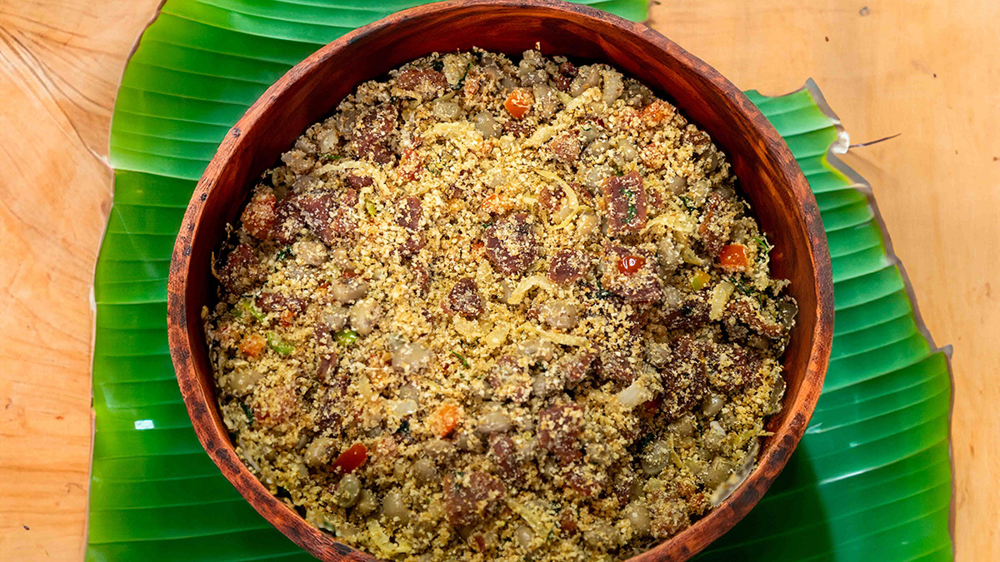

Farofa com Bacon e Cebola Caramelizada
Ingredientes
- 2 xícaras de farinha de mandioca (grossa ou biju, a que preferir)
- 4 xícaras de água quente
- 2 cebolas grandes fatiadas
- 2 colheres (sopa) de manteiga
- 1 fio de azeite
- Sal e pimenta-do-reino a gosto
- Salsinha picada para finalizar (opcional)
Modo de Preparo
- Aqueça uma frigideira grande e frite o bacon até dourar e soltar a gordura. Retire o bacon e
reserve.
- Na gordura que ficou na frigideira, adicione o azeite e a manteiga.
- Acrescente as cebolas fatiadas e cozinhe em fogo médio-baixo até ficarem douradas e caramelizadas.
Isso leva cerca de 8 a 10 minutos.
- Volte o bacon para a frigideira e misture.
- Acrescente a farinha aos poucos, mexendo sempre, até atingir a textura desejada (mais sequinha ou
mais úmida).
- Tempere com sal (pouco, porque o bacon já é salgado) e pimenta-do-reino.
- Finalize com salsinha picada, se quiser.
 20 min
•
20 min
•
 Serve 6 pessoas
•
Serve 6 pessoas
•
 Fácil
Fácil